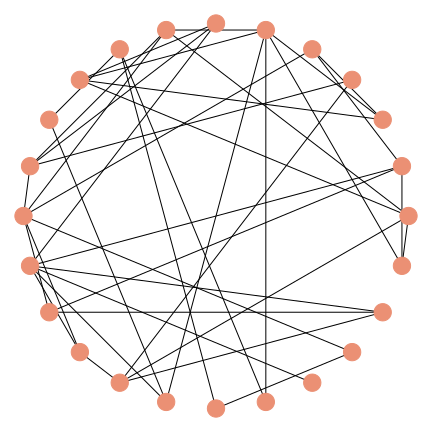
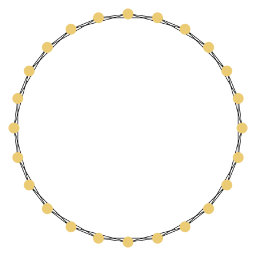
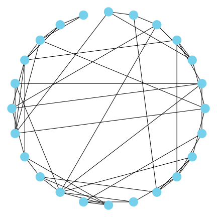
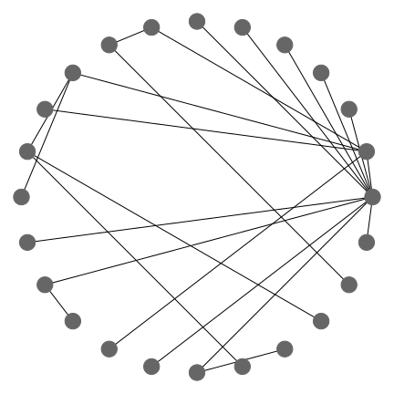

What is a Network?
Blablabla definition of a network.

Properties
In order to study the properties of the elements that complex networks represents it is necessary to characterise the network with some features. Let's see the most important ones!
Number of nodes and links
An obvious characterisation is the numbers of nodes and number of links of the complex network, but perhaps it won't bring a deep knowledge about the studied system, as we'll be interested in the interactions of the elements.
This measure does give us a feel for the level of complexity the system may present, though, since complexity arises from the interaction of many units.
Degree of a node
The degree of a node is defined as the number of links that are connected to it. In the case of directed graphs in-degree and out-degree can be considered for each node, its sum being the total degree, which corresponds to what we would obtain if the graph was undirected.

Degree distribution and average degree
Then, the degree distribution is just the sample of the degrees over all the network and the average degree is a property of the whole network.

Distances between nodes, average distance and Graph diameter
The distance between two nodes is defined as the number of edges along the shortest path connecting them. In directed graphs each path needs to follow the direction of the arrows. Thus, in a directed graph the distance from node A to B (on an AB path) is generally
different from the distance from node B to A (on a BA path).
 The average shortest path in real (complex) networks is short in comparison to regular networks (a 2D-lattice) but still a bit longer than in a network where the links between nodes are set randomly.
The graph diameter is defined as the maximum distance between any pair of nodes in the graph.
It is important to note that it is not the longest path, as the distance is computed along the shortest path the diameter will be the maximum of the shortest paths between any pair of nodes.
The average shortest path in real (complex) networks is short in comparison to regular networks (a 2D-lattice) but still a bit longer than in a network where the links between nodes are set randomly.
The graph diameter is defined as the maximum distance between any pair of nodes in the graph.
It is important to note that it is not the longest path, as the distance is computed along the shortest path the diameter will be the maximum of the shortest paths between any pair of nodes.
The average shortest path in real (complex) networks is short in comparison to regular networks (a 2D-lattice) but still a bit longer than in a network where the links between nodes are set randomly.
The graph diameter is defined as the maximum distance between any pair of nodes in the graph.
It is important to note that it is not the longest path, as the distance is computed along the shortest path the diameter will be the maximum of the shortest paths between any pair of nodes.
Clique, components and motifs.

Clustering
In a complex network, we find that the clustering is quite high in comparison to regular and random networks.

Types of networks
Bla bla
Random networks
Bla bla

Regular lattices
Bla bla

Small world networks
Bla bla

Preferental attachment networks
Bla bla
